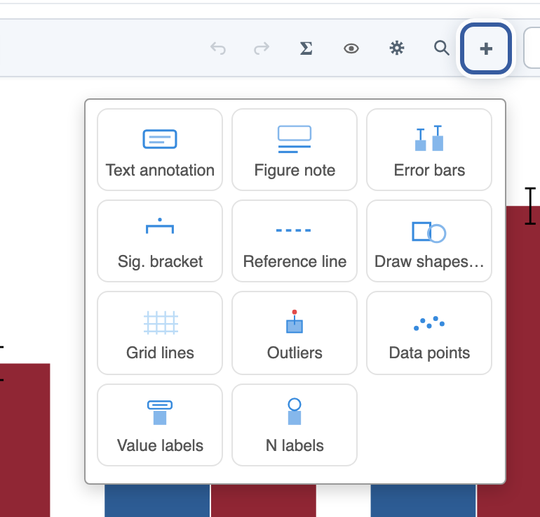
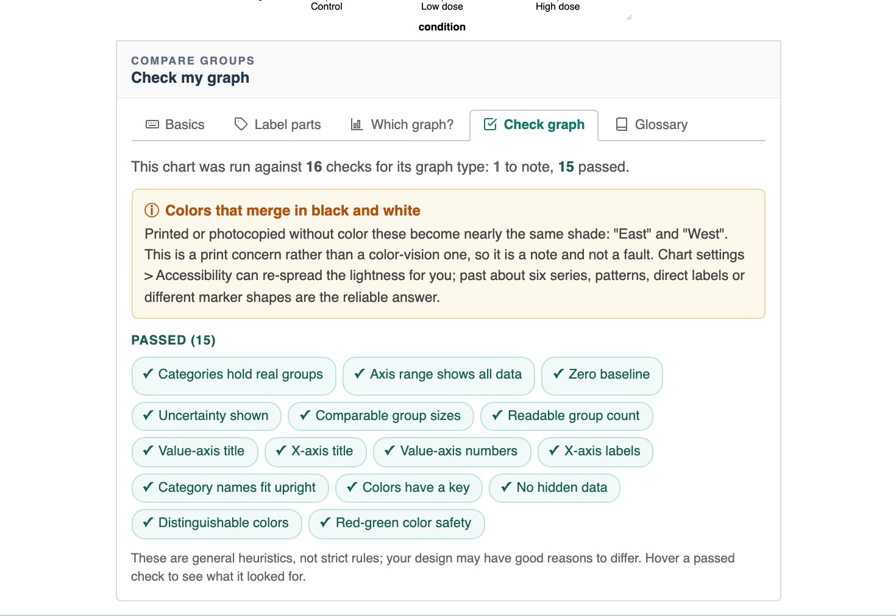
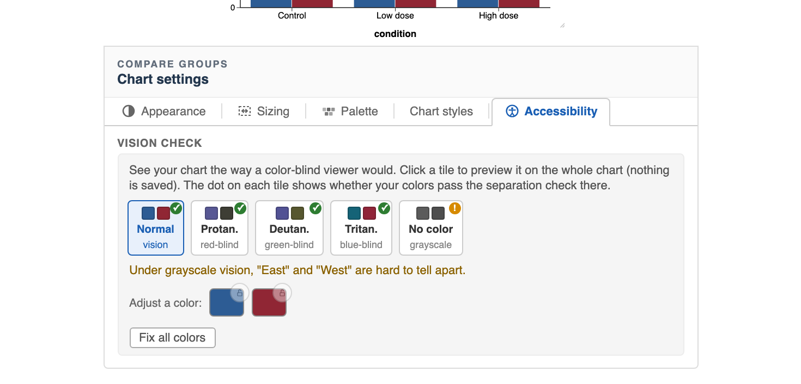

Pandion Plots
Pandion Plots
Learn · Finishing
Make it publication-ready.
A finished figure needs more than good bars: labels that say what things are, a note that says what the error bars mean, colors that survive printing and color-blind readers, and the right file format. This is the pass to make before a figure leaves the app. The finishing tools live in the chart itself, so nearly all of this is the same in jamovi; the toggle below covers the spots that differ.
1. Say what everything is
Rename the axes by clicking their titles (column names like score rarely read well), then open the + menu for the finishing furniture.

The figure note is the right home for what the error bars show (“Error bars show ±1 SE.”). If you write a note and it does not say, the graph checker below will remind you; if you place asterisk brackets, it will suggest the standard key.
2. Let the app review it
The Checks passed chip in the corner of the app (or the ? panel’s Check graph tab) runs the chart against a rubric for its graph type: axis honesty, missing labels, color risks, unreadable choices.
The ? button on the chart toolbar opens the help panel; its Check graph tab runs the chart against a rubric for its graph type: axis honesty, missing labels, color risks, unreadable choices.

The checks are heuristics, not laws: each card explains WHY it fired so you can decide. A figure that passes clean is hard to embarrass in review.
3. Check it for every reader
Chart settings → Accessibility is the Vision check: five tiles preview your exact colors under red-blind, green-blind, blue-blind, and grayscale vision, each with a pass or warn dot.

You can lock a color you must keep (a brand blue, say) and fix only the rest, adjust any single series by hand from the same row, and save the result as your default palette for every new chart.
4. Export the right file
Export chart is the last stop. The format does matter: SVG and PDF are vector, so they stay sharp at any size in a manuscript; PNG at the default print resolution is the safe choice for slides, documents, and assignments.

Save project keeps the editable .pand file alongside the exported image, so you can always come back and re-export.
The download button on the chart toolbar opens Export plot, the last stop. The format does matter: SVG and PDF are vector, so they stay sharp at any size in a manuscript; PNG at print resolution is the safe choice for slides, documents, and assignments.

The .omv file itself keeps every edit, so you can always come back and re-export.
Last in the series: get your data ready, the Data workspace of the browser and desktop app. All the guides live on the Learn page.